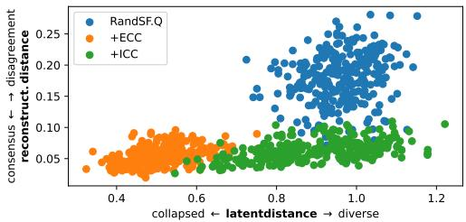

Figureure 1 · : Decomposition DivergenceFigure 1: Decomposition Divergence. We visualize the attention masks of frame t from Forward and Backward streams. (middle) Explicit Cycle Consistency (ECC) forces alignment, causing conflict and blurriness. (right) Implicit Cycle Consistency (ICC) allows the Forward stream to clearly segment the car, land, tree and sky, while decomposing the car into different sets of the car’s parts. Gaussian-smoothed for better presentation.这张可视化用来解释 Cycle Consistency in Video Object-Centric 学到的中间表征或对齐关系。重点看它是否支持正文里的机制判断。

Figureure 4 · : Manifold Alignment AnalysisFigure 4: Manifold Alignment Analysis. Each dot represents a video frame. ICC achieves high consensus on reconstruction (low Y-axis) despite allowing slots to diverge in the latent space (high X-axis), validating that we align on the reconstruction manifold.这张图来自论文 PDF 的结构化抽取。当前用于辅助理解 Cycle Consistency in Video Object-Centric 的方法或实验，请结合正文精读段落一起看。